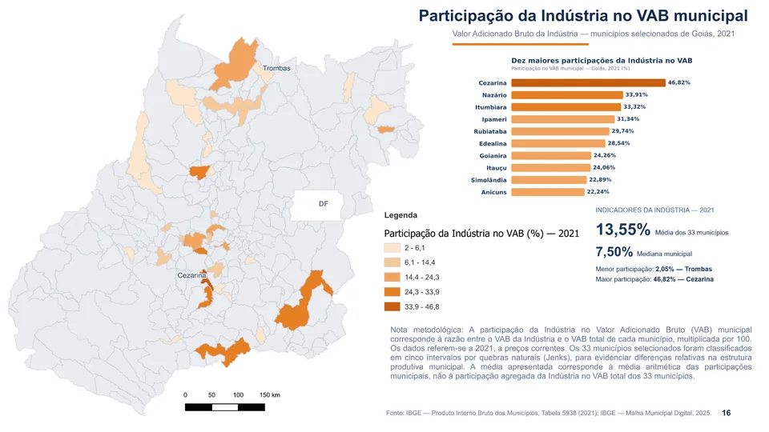

Formação acadêmica
Graduação em Geoprocessamento pelo IFG e mestrado em Engenharia do Meio Ambiente pela UFG, com ênfase em Recursos Hídricos.
Geoprocessamento, análise espacial e cartografia temática aplicados à compreensão do território. Uma seleção de projetos desenvolvidos com dados públicos, rigor metodológico e comunicação visual.

Uma coleção de mapas dos 33 municípios selecionados de Goiás, reunindo território, demografia, desenvolvimento humano e economia. Clique em um mapa para visualizá-lo em tamanho ampliado.
Os mapas são produtos cartográficos de estudo e demonstração técnica. O ano de cada indicador está identificado na respectiva peça; dados e metodologias variam conforme o tema.
Sou graduado em Geoprocessamento pelo Instituto Federal de Goiás (IFG) e mestre em Engenharia do Meio Ambiente pela Universidade Federal de Goiás (UFG), com ênfase em Recursos Hídricos.
Minha trajetória reúne experiência em gestão pública, atuação empresarial, docência superior e desenvolvimento de projetos envolvendo geoprocessamento, sensoriamento remoto, análise espacial e inteligência territorial.
Trabalho com a integração de dados geográficos, tecnologias e métodos de análise para produzir informações confiáveis, mapas e soluções que apoiem a tomada de decisões.
Graduação em Geoprocessamento pelo IFG e mestrado em Engenharia do Meio Ambiente pela UFG, com ênfase em Recursos Hídricos.
Superintendente de Inteligência de Dados e Geotecnologias no Instituto Mauro Borges (IMB), desde 2023. Atuação em coordenação técnica, análise territorial e produção de informações estratégicas.
Sócio-diretor da G3 Geotecnologias entre 2013 e 2023, com experiência na gestão e execução de projetos de geoprocessamento, sensoriamento remoto e estudos ambientais.
Experiência no ensino de Geoprocessamento, Topografia, Geodésia, Hidrologia, Estatística e disciplinas correlatas, contribuindo para a formação técnica e acadêmica.
Portfólio profissional pessoal, sem caráter de representação institucional.
Seleção de bases públicas, documentação dos indicadores e conferência dos recortes territoriais.
Integração de tabelas, geometrias e estatísticas com QGIS e Python.
Classificação temática, síntese gráfica, revisão metodológica e publicação dos resultados.
Este portfólio está em construção. Em breve, novos projetos e demonstrações interativas estarão disponíveis.
Você pode personalizar esta seção com seu LinkedIn profissional e e-mail público antes de publicar.
Voltar ao início ↑